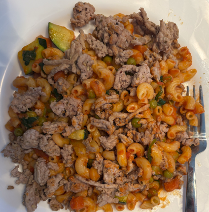

Macaroni protéiné et dinde hachée
Ingrédients
- Macaroni Protéine+, Catelli - 1 boîte
- Dinde, hachée - 450 g
- Légumes variés, frais ou congelés - Au goût
- Sauce tomate - 2 tasses
- Sel et poivre - Au goût
Préparation
- Dans une grande casserole d'eau bouillante salée, faites cuire les pâtes
environ 10 minutes. Égouttez les pâtes et remttez-les dans la casserole.
- Dans une poêle anti-adhésive, faites cuire la dinde hachée. Salez et poivrez.
- Ajoutez les légumes cuits et la sauce tomate. Mélangez pour bien enrober
les pâtes.
- Dans des assiettes, répartissez les pâtes. Parsemez de fromage
au goût.